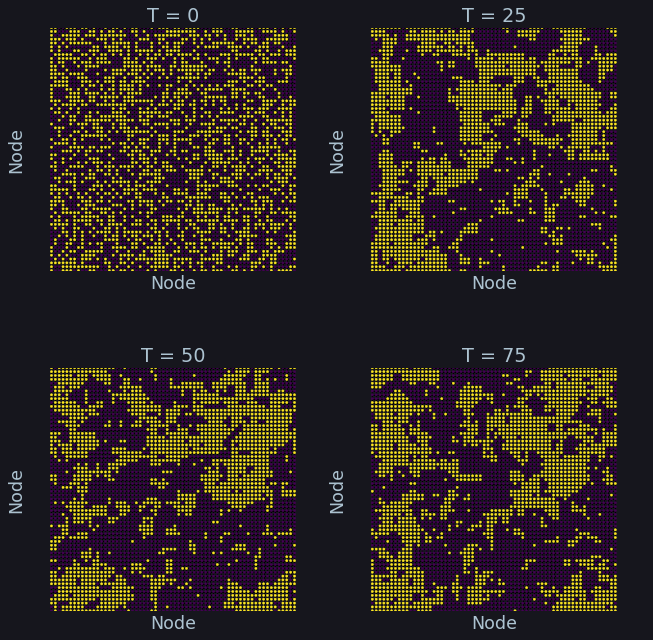

Table of Contents
:customid: quickstart
Quickstart
Setting up the model
Plexsim relies on networkx to create a graphical structure on which to
simulate models. Various models are available in plexsim.models. Below the
Ising model is used
from matplotlib import style; style.use("seaborn-poster".split()) import numpy as np, os, sys, networkx as nx, warnings, matplotlib.pyplot as plt warnings.simplefilter("ignore") from plexsim import models # init lattice graph with periodic bounds g = nx.grid_graph((64, 64), periodic = 1) # create an ising model temperature = 2.5 # async with sampleSize > 1, can be seen as sampleSize of glauberupdates in 1 simulation step settings = dict(graph = g, # graph for the model t = temperature, #temperature for the Ising model sampleSize = len(g), #how many nodes to update per simulation step (default) updateType = 'async',#the update buffers are not independent, use sync for dependency(default) ) m = models.Ising(**settings) # create coords an visualize grid with periodic bounds # leverage the fact that grid returns tuples of coordinates pos = {i: np.array(eval(i)) for i in m.graph.nodes()} # create color map for the possible states of the model colors = plt.cm.viridis(np.linspace(0, 1, m.nStates)) fig, ax = plt.subplots(constrained_layout = 1, figsize = (5, 5)) nx.draw(m.graph, pos = pos, ax = ax, node_color = colors[m.states.astype(int)], node_size = 20) C = "#ADC3D1" fc = '#16161D' ax.margins(0.05) ax.set_title("Ising model with random initial condition", fontsize = 21, color = C) #ax.axis('equal') ax.set_ylabel("Node", labelpad = 1, color = C) ax.set_xlabel("Node", color = C) for i in "left right bottom top".split(): ax.spines[i].set_visible(False) ax.axis(True) ax.set_xticks([]) ax.set_yticks([]) ax.set_facecolor(fc) fig.set_facecolor(fc) fig.show()

Simulation
n = int(1e2) # simulation steps m.reset() # reset model to random condition sim_results = m.simulate(n) # show averages spacing = np.linspace(0, n, 4, endpoint = False).astype(int) fig, ax = plt.subplots(2, 2, figsize = (10,10), constrained_layout = 1) for idx, axi in zip(spacing, ax.flat): tmp = sim_results[idx] nx.draw(m.graph, pos = pos, ax = axi, node_color = colors[tmp.astype(int)], node_size = 5) axi.axis('equal'); axi.axis(True); axi.grid(False) axi.margins(0) axi.set_title(f'T = {idx}', color = C) axi.set_facecolor(fc) axi.set_ylabel("Node", labelpad = -5, color = C) axi.set_xlabel("Node", color = C) for i in "left right bottom top".split(): axi.spines[i].set_visible(False) fig.subplots_adjust(wspace = .05, hspace = .4) fig.set_facecolor(fc) fig.show()

Other parameters
The documentation is a work in progress. Please check out the source code for different models.